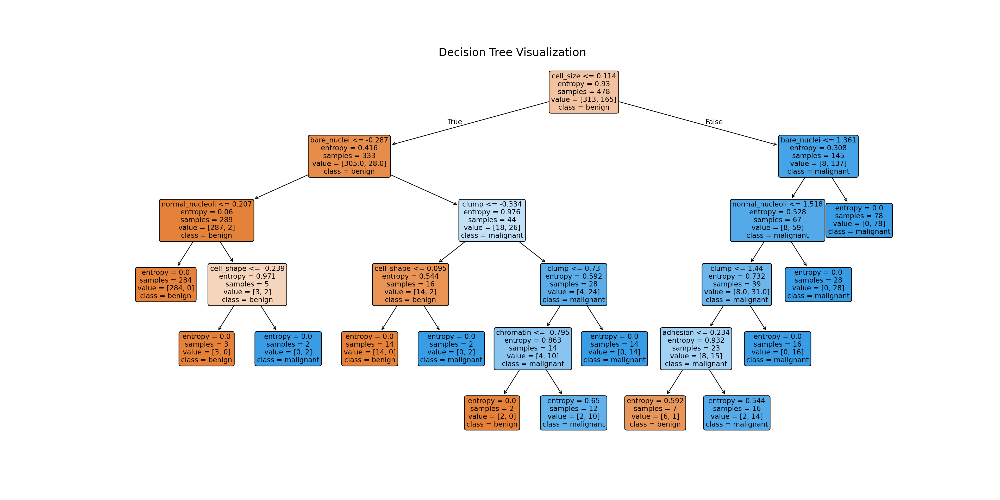

Machine Learning in Economics
Agenda
Penalized Regressions
Ridge Regression and LASSO
Tree-based Models
Decision Trees and Forests
Causal Trees
Disclaimer
I brought quite an extensive combination of useful materials. You can find tons of materials to learn, understand, and practice ML. That also means that there are tons of algorithms and processes that we can’t cover in these slides.
Indeed, important areas of ML such as deep learning, cross validation, theoretical aspects of bias-variance tradeoffs are dropped out here.
Also, in these slides, we only focus on supervised ML, where there are correct answers and we want the model to find them.
What is our primary interest?
Machine Learning and Econometrics
Prediction
In ML and recent applied statistics, people want a better prediction of the future or a specific value from a new data, which often does not require statistical properties or CIs.
Estimation
In econometrics, people want to understand the DGP, obtain causal parameters and their statistical properties or CIs.

Machine Learning and Econometrics
Prediction
We find \(f\) such that \[ f(X_i) \approx y_i\]
Estimation
We find \(g\) such that
\(g(X_i) \approx y_i\) and \(\nabla g(X_i)\) captures the causal effect.
e.g. Hotel fees and reservation rates
Machine Learning and Econometrics
In most cases, we need both prediction and estimation.
Rather than relying on one strategy, why don’t we allocate the tasks to whoever is good at them?
Example 1) Imputation with ML, and causal inference with IVs
Example 2) Select out covariates with LASSO to reduce the dimension, and do the rest with DiD
Example 3) Minimize the MSE on the suggested causal parameters rather than on outcomes.
Penalized Regressions
Background
Penalized regressions, or regularized regressions, are regressions with loss functions modified to reduce the possibility of overfitting. Usually, large coefficients lead to overfitting. Thus, penalized regressions such as ridge regressions and LASSO(Least Absolute Shrinkage and Selection Operator) penalizes large sized coefficients, by including the size of coefficients into the loss function.
Loss Function of OLS
\[ MSE = \sum_{i=1}^n(y_i-X_i'\beta)^2 \]
Loss Function of Ridge/LASSO
\[ Loss(\beta;\alpha) = MSE + \alpha\cdot\sum_{k=1}^K||\beta_k|| \]
The Problem with overfitting
Ridge Regressions and LASSO
Details are in my web document. ::::{.columns} :::{.column width=“50%”} ### Ridge \[ Loss(\beta; \alpha) = MSE + \alpha\cdot\sum_{k=1}^K\beta_k^2 \]
LASSO
\[ Loss(\beta; \alpha) = MSE + \alpha\cdot\sum_{k=1}^K|\beta_k| \]
:::
::::
- Here, \(\alpha\) is called a hyperparameter, a parameter that we choose to optimize the prediction.
- In the case of \(\alpha = 0\), LASSO would be equivalent to OLS.
- LASSO shrinks the coefficients of less important features to zero
Practice with Python
Loading Data
Code
#libraries
import pandas as pd
import numpy as np
import seaborn as sns
import matplotlib.pyplot as plt
from sklearn.model_selection import train_test_split
from sklearn.linear_model import LinearRegression
from sklearn.linear_model import Lasso
from sklearn.preprocessing import StandardScaler
from sklearn.datasets import fetch_california_housing
#data
housing = fetch_california_housing()
X = fetch_california_housing(as_frame = True)['data']
y = fetch_california_housing(as_frame = True)['target']
data = pd.concat([X, y], axis = 1)
#Exploration
plt.figure(figsize = (10, 10))
sns.heatmap(data.corr(), annot = True)
print('features: ', X.columns)features: Index(['MedInc', 'HouseAge', 'AveRooms', 'AveBedrms', 'Population', 'AveOccup',
'Latitude', 'Longitude'],
dtype='object')target: MedHouseValData Splitting and Normalization
features = data.columns[0:8]
target = data.columns[-1]
#X and y values
X = data[features].values
y = data[target].values
#split
X_train, X_test, y_train, y_test = train_test_split(X, y, test_size=0.3, random_state=17)
# Normalization
scaler = StandardScaler()
X_train = scaler.fit_transform(X_train)
X_test = scaler.transform(X_test)LASSO(\(\alpha=3\))
Lasso(alpha=3)In a Jupyter environment, please rerun this cell to show the HTML representation or trust the notebook.
On GitHub, the HTML representation is unable to render, please try loading this page with nbviewer.org.
Lasso(alpha=3)

LASSO(\(\alpha=0.1\))
Lasso(alpha=0.1)In a Jupyter environment, please rerun this cell to show the HTML representation or trust the notebook.
On GitHub, the HTML representation is unable to render, please try loading this page with nbviewer.org.
Lasso(alpha=0.1)
Braghieri et al. (2022)
Braghieri et al. (2022)
Decision Trees
Decision Trees
Trees are a supervised ML method to predict either a continuous outcome(regression trees) or a discrete outcome(classification trees). One favorable aspect is that they’re “white-box” mechanism, which means we can understand how they chose the prediction.
There are also detrimental disadvantages, including the high variance of a model and ensembled models used to reduce that variance making the mechanism difficult to interpret.
Decision Trees
Trees recursively partition the covariate space so that going down to each node, the variance of the \(y\) value in the subset is low and \(y\)’s are better predicted.

We divide the data into training set(0.7) and a test set(0.3), fit the tree to the training set, and obtain the goodness-of-fit measure from the test set.
Practice with R/Python
Loading Data
# install.packages('tidyverse')
library(tidyverse)
library(tidymodels)
breast_cancer <- read_csv('https://archive.ics.uci.edu/ml/machine-learning-databases/breast-cancer-wisconsin/breast-cancer-wisconsin.data', col_names = FALSE)
colnames(breast_cancer) <- c('id', 'clump', 'cell_size', 'cell_shape', 'adhesion', 'epithlial', 'bare_nuclei', 'chromatin', 'normal_nucleoli', 'mitoses', 'class')
head(breast_cancer)# A tibble: 6 × 11
id clump cell_size cell_shape adhesion epithlial bare_nuclei chromatin
<dbl> <dbl> <dbl> <dbl> <dbl> <dbl> <chr> <dbl>
1 1000025 5 1 1 1 2 1 3
2 1002945 5 4 4 5 7 10 3
3 1015425 3 1 1 1 2 2 3
4 1016277 6 8 8 1 3 4 3
5 1017023 4 1 1 3 2 1 3
6 1017122 8 10 10 8 7 10 9
# ℹ 3 more variables: normal_nucleoli <dbl>, mitoses <dbl>, class <dbl># !pip install pandas
import pandas as pd
import numpy as np
breast_cancer = pd.read_csv('https://archive.ics.uci.edu/ml/machine-learning-databases/breast-cancer-wisconsin/breast-cancer-wisconsin.data', header = None)
breast_cancer.columns = ['id', 'clump', 'cell_size', 'cell_shape', 'adhesion', 'epithlial', 'bare_nuclei', 'chromatin', 'normal_nucleoli', 'mitoses', 'class']
breast_cancer.head() id clump cell_size ... normal_nucleoli mitoses class
0 1000025 5 1 ... 1 1 2
1 1002945 5 4 ... 2 1 2
2 1015425 3 1 ... 1 1 2
3 1016277 6 8 ... 7 1 2
4 1017023 4 1 ... 1 1 2
[5 rows x 11 columns]Preprocessing
Data Splitting and Normalization
# standardize X variables
breast_cancer <- breast_cancer %>% mutate(across(-class, ~ scale(.) %>% as.vector(), .names = "{.col}"))
# split the data
breast_cancer_split <- initial_split(breast_cancer, prop = 0.7, strata = class)
breast_cancer_train <- training(breast_cancer_split)
breast_cancer_test <- testing(breast_cancer_split)from sklearn import preprocessing
from sklearn.model_selection import train_test_split
X = breast_cancer[['clump', 'cell_size', 'cell_shape', 'adhesion', 'epithlial', 'bare_nuclei', 'chromatin', 'normal_nucleoli', 'mitoses']]
y = breast_cancer['class']
X = preprocessing.StandardScaler().fit(X).transform(X)
X_train, X_test, y_train, y_test = train_test_split(X, y, test_size=0.3, random_state=10)Model Fit and Results
# instantiate the engine
tree_spec <- decision_tree() %>%
set_engine("rpart") %>%
set_mode("classification")
# fit the model to the training data
breast_cancer_fit <- tree_spec %>%
fit(formula = class ~ clump + cell_size + cell_shape + adhesion + epithlial + bare_nuclei + chromatin + normal_nucleoli + mitoses, data = breast_cancer_train)
# predict y values in the test data
pred <- predict(breast_cancer_fit, new_data = breast_cancer_test, type = "class") %>%
mutate(truth = breast_cancer_test$class)
pred# A tibble: 206 × 2
.pred_class truth
<fct> <fct>
1 4 2
2 4 2
3 2 2
4 2 2
5 4 4
6 4 4
7 2 2
8 2 2
9 4 4
10 2 2
# ℹ 196 more rowsfrom sklearn.tree import DecisionTreeClassifier, plot_tree
# instantiate the tree
tree_model = DecisionTreeClassifier(criterion='entropy', max_depth=5)
# fit the model to the training data
tree_model.fit(X_train, y_train)DecisionTreeClassifier(criterion='entropy', max_depth=5)In a Jupyter environment, please rerun this cell to show the HTML representation or trust the notebook.
On GitHub, the HTML representation is unable to render, please try loading this page with nbviewer.org.
DecisionTreeClassifier(criterion='entropy', max_depth=5)
[4 4 4 4 4 4 2 2 4 4][4 4 4 4 4 4 2 2 4 4]Resulting Tree
plt.figure(figsize=(20, 10)) # Adjust the figure size
plot_tree(
tree_model, # The trained decision tree model
feature_names=['clump', 'cell_size', 'cell_shape', 'adhesion', 'epithlial',
'bare_nuclei', 'chromatin', 'normal_nucleoli', 'mitoses'], # Feature names
class_names=['benign', 'malignant'], # Class names
filled=True, # Color the nodes
rounded=True, # Rounded corners for readability
fontsize=10 # Adjust font size
)
plt.title("Decision Tree Visualization", fontsize=16)
plt.show()
Model Performance
from sklearn import metrics
# Confusion Matrix
tree_matrix = metrics.confusion_matrix(y_test, y_hat)
print('Confusion Matrix: ', tree_matrix)Confusion Matrix: [[127 4]
[ 2 72]]# Classification Report
tree_report = metrics.classification_report(y_test, y_hat)
print('Classification Report: ',tree_report)Classification Report: precision recall f1-score support
2 0.98 0.97 0.98 131
4 0.95 0.97 0.96 74
accuracy 0.97 205
macro avg 0.97 0.97 0.97 205
weighted avg 0.97 0.97 0.97 205Brief Address on Bagged Trees and Random Forests
Bagged Trees
Bagging = Bootstrap + Aggregation
Bootstrapping: Sample with replacement → Multiple Training sets → Multiple Trees
- Aggregation
- average(in regression), majority vote(in classification)
Brief Address on Bagged Trees and Random Forests
Random Forests
Multiple trees from bagged trees don’t always lead to a greater performance, as the trees share the same predictors (it leads to correlation between trees).
Rather, we’d like to randomly select the set of predictors across trees, and then perform BAGG.
This is what random forest does.
Brief Address on Bagged Trees and Random Forests
Random Forests
Heterogeneous Treatment Effects
HTE has a wide array of meanings, but in essence, they all boil down to having multiple values of treatment effects, conditional on the characteristics of an observation.
Examples
- Medicaid for 80+ vs Medicaid for 40-
- ATE at a certain period of a certain group(Staggered Treatments)
CATE
The standard approach for HTEs are CATE(conditional average treatment effect).
\[\tau(x) := E[Y_i(1)-Y_i(0)|X_i=x]\]
\(X_i\) could be the age, sex, or any characteristics that could affect the treatment effect. In real practice, we often only allow “group” variables(i.e. classifying each sample into different subgroups and calculate their ATEs).
Let’s consider a simple case of a dummy, such as sex.
*Unconfoundedness
Just before we move on, we’re going to assume that the treatment is randomized (conditional on the covariates).
\[W_i \perp (Y_i(0), Y_i(1)) | X_i\]
Pre-specified Hypotheses
The question is, “Is the treatment effect heterogeneous?”
\[H_0: E[Y(1)-Y(0)|G_i=1] - E[Y(1)-Y(0)|G_i=0] = 0\]
What happens if there are multiple values of \(G_i\)’s to be considered? Also, what dimensions of covariates should we suspect HTEs?
They require a much more complex approach, which will not be discussed in these slides. And instead of the researcher-specified hypotheses, we want the data to specify the hypotheses by itself(Data-driven hypotheses).
Data-driven Hypotheses with Causal Trees
We are now dividing the sample into different subgroups defined by the covariates and the decision tree. Thus, each subgroup has a corresponding leaf, and HTEs can now be called leaf effects.
Causal Trees
These practices rely heavily on GCSI lab’s machine learning tutorials, which also relies on the General Social Surveys.
# The causalTree package is not in CRAN, the most common R repository.
# To install it, uncomment the next lines as appropriate.
# install.packages("devtools") # if you don't have this installed yet.
# devtools::install_github('susanathey/causalTree')
library(causalTree)
# use e.g., install.packages("tidyverse") to install any of the following packages.
library(tidyverse)
library(grf)
library(rpart)
library(glmnet)
library(splines)
library(MASS)
library(lmtest)
library(sandwich)# Read in data
data <- read.csv("https://docs.google.com/uc?id=1AQva5-vDlgBcM_Tv9yrO8yMYRfQJgqo_&export=download")
n <- nrow(data)
# Treatment: does the the gov't spend too much on "welfare" (1) or "assistance to the poor" (0)
treatment <- "w"
# Outcome: 1 for 'yes', 0 for 'no'
outcome <- "y"
# Additional covariates
covariates <- c("age", "polviews", "income", "educ", "marital", "sex")Causal Trees
X y w age polviews income educ marital sex
1 1 0 0 28 4 11 14 5 1
2 2 1 0 54 6 12 16 2 2
3 3 1 0 44 2 12 16 5 2
4 6 0 0 47 1 5 10 4 1
5 7 0 1 19 4 9 10 5 2
6 8 0 0 36 2 8 18 1 1Causal tree divides the sample into three subsets: \(S^{tr}\)(split), \(S^{est}\)(est), and \(S^{te}\)(test).
\(S^{tr}\): the training set which constructs the model(or equivalently, the tree) to maximize heterogeneity in treatment effect estimates across leaves
\(S^{est}\): the set used to estimate the HTE(more rigorously, the TE of a leaf)
\(S^{te}\): the test set to assess the model performance
The algorithm is quite recursive. There are some aspects I don’t understand well. I’d love to hear both questions and clarifications.
1. Tree Splitting
From the root, the data will be split into two groups to best minimize the risk function. There are four possible splitting rules, with CT-H being used most commonly and Transformed Outcome being the most intuitive. We will only cover TO.
Transformed Outcomes
Let \[ Y_i^* = \begin{cases} Y_i/p &(W_i=1)\\ -Y_i/(1-p) &(W_i=0) \end{cases} \] where \(p=N_{treat}/N\)
is the treatment probability independent of the covariates.
Straightforward that \[ E[Y_i^*|X_i=x] = \tau_i(x) \]
1. Tree Splitting
From the root, the data will be split into two groups to best minimize the risk function. There are four possible splitting rules, with CT-H being used most commonly and Transformed Outcome being the most intuitive. We will only cover TO.
Risk Function
\[ \hat{MSE}(S^{tr}, S^{tr}, \Pi) = \frac{1}{N^{tr}}\sum_{i \in S^{tr}}\{(Y_i^* - \hat{\tau}(X_i;S^{tr}, \Pi))^2 - Y_i^{*2}\} \]
where \(\hat{\tau}(X_i; S^{tr}, \Pi)\)
is similarily defined as in the next slide, but only made with the \(S^{tr}\) samples.
RMK) In each leaf, there must be at least one treated observation and one controlled observation in the \(S^{est}\) set to estimate \(\tau(x)\).
2. Leaf Effects
The estimates of leaf effects are obtained from \(S^{est}\).
Given a tree \(\Pi\) (derived from \(S^{tr}\)),
\[ \hat{\tau} (X_i; S^{est}, \Pi) = \]
\[ \frac{1}{\sum_{i \in S^{est} \cap l(X_i; \Pi)}W_i}\sum_{i \in S^{est} \cap l(X_i; \Pi)}W_iY_i - \frac{1}{\sum_{i \in S^{est} \cap l(X_i; \Pi)}(1-W_i)}\sum_{i \in S^{est} \cap l(X_i; \Pi)} (1-W_i)Y_i \]
3. Model Evaluation and Pruning
- We calculate the \(MSE_{\tau}\) in the test set.
- Use cross-validation to select the right depth \(d^*\) of the partition that minimizes those \(MSE_{\tau}\)’s.
- Select partition \(\Pi^*\) by pruning \(\Pi\) to the depth \(d^*\), pruning leaves that provide the smallest improvement in the goodness of fit.
Application
# Only valid for randomized data!
fmla <- paste(outcome, " ~", paste(covariates, collapse = " + "))
# Dividing data into three subsets
indices <- split(seq(nrow(data)), sort(seq(nrow(data)) %% 3))
names(indices) <- c('split', 'est', 'test')
# Fitting the forest
ct.unpruned <- honest.causalTree(
formula=fmla, # Define the model
data=data[indices$split,],
treatment=data[indices$split, treatment],
est_data=data[indices$est,],
est_treatment=data[indices$est, treatment],
minsize=1, # Min. number of treatment and control cases in each leaf
HonestSampleSize=length(indices$est), # Num obs used in estimation after splitting
# We recommend not changing the parameters below
split.Rule="CT", # Define the splitting option
cv.option="TOT", # Cross validation options
cp=0, # Complexity parameter
split.Honest=TRUE, # Use honesty when splitting
cv.Honest=TRUE # Use honesty when performing cross-validation
)
# Table of cross-validated values by tuning parameter.
ct.cptable <- as.data.frame(ct.unpruned$cptable)
# Obtain optimal complexity parameter to prune tree.
cp.selected <- which.min(ct.cptable$xerror)
cp.optimal <- ct.cptable[cp.selected, "CP"]
# Prune the tree at optimal complexity parameter.
ct.pruned <- prune(tree=ct.unpruned, cp=cp.optimal)
# Predict point estimates (on estimation sample)
tau.hat.est <- predict(ct.pruned, newdata=data[indices$est,])
# Create a factor column 'leaf' indicating leaf assignment in the estimation set
num.leaves <- length(unique(tau.hat.est))
leaf <- factor(tau.hat.est, levels=sort(unique(tau.hat.est)), labels = seq(num.leaves))Application
rpart.plot(
x=ct.pruned, # Pruned tree
type=3, # Draw separate split labels for the left and right directions
fallen=TRUE, # Position the leaf nodes at the bottom of the graph
leaf.round=1, # Rounding of the corners of the leaf node boxes
extra=100, # Display the percentage of observations in the node
branch=.1, # Shape of the branch lines
box.palette="RdBu") # Palette for coloring the nodeReferences and Resources
Documents
Courses
Applied Economic Methods Study Group